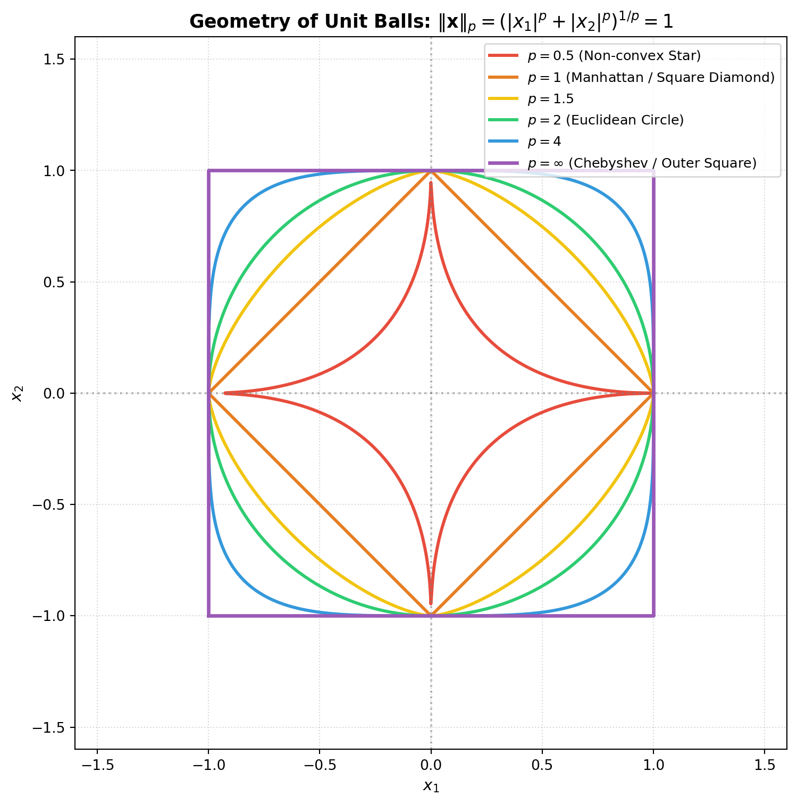

Geometries, Topologies, and Manifolds: The Mathematics of Spheres, Tori, Norm-Balls, and C-Spaces
From non-Euclidean curvature and the Gauss-Bonnet theorem to Lp unit spheres, robotic configuration spaces, and topological physics.
Mathematics
Geometry
Topology
Physics
Robotics
Published
September 8, 2026
Most people grow up learning Euclidean geometry—the flat, intuitive geometry of straight lines, parallel planes, and the Pythagorean theorem. In Euclid’s universe, triangles always sum to \(180^\circ\), circles have circumference \(2\pi r\), and a “sphere” is always perfectly round.
However, modern mathematics, theoretical physics, and robotics reveal that geometry is far richer. Surfaces curve; spaces loop back on themselves; distances can be measured with non-Euclidean metrics where a “sphere” is a square; and the motion of a mechanical robot arm lives not in three-dimensional physical space, but on the surface of an abstract multi-dimensional torus.
This article explores the deep interplay between differential geometry, topology, norm spaces, and their critical applications in classical mechanics, robotics, and quantum physics.
1. The Three Geometries and Gaussian Curvature
In differential geometry, the local shape of a two-dimensional surface (manifold \(M\)) embedded in \(\mathbb{R}^3\) is characterized at each point by its two principal curvatures \(\kappa_1\) and \(\kappa_2\) (the maximum and minimum bending of curves through that point).
Carl Friedrich Gauss discovered the remarkable Theorema Egregium (“Remarkable Theorem”): the product of these two principal curvatures—the Gaussian Curvature\(K\)—is an intrinsic invariant of the surface: \[\boxed{K = \kappa_1 \kappa_2}\]\(K\) can be measured entirely by observers living inside the 2D surface (by measuring angles and distances) without any reference to the surrounding 3D space!
Geometry
Curvature \(K\)
Model Surface
Triangle Angle Sum
Circumference of Circle
Spherical (Elliptic)
\(K > 0\) (Constant \(> 0\))
2-Sphere \(S^2\)
\(\sum \alpha_i > \pi\)
\(C < 2\pi r\)
Euclidean (Parabolic)
\(K = 0\) (Flat)
Plane \(\mathbb{R}^2\), Cylinder, Flat Torus
\(\sum \alpha_i = \pi\)
\(C = 2\pi r\)
Hyperbolic (Hyperbolic)
\(K < 0\) (Constant \(< 0\))
Pseudosphere, Poincaré Disk
\(\sum \alpha_i < \pi\)
\(C > 2\pi r\)
The Gauss-Bonnet Theorem: Bridging Geometry and Topology
The Gauss-Bonnet theorem is one of the crowning achievements of mathematics, establishing an infallible link between local differential geometry (curvature \(K\)) and global algebraic topology (the Euler characteristic\(\chi\)):
\[\boxed{\int_M K \, dA + \int_{\partial M} k_g \, ds = 2\pi \chi(M)}\] where \(k_g\) is the geodesic curvature along the boundary \(\partial M\).
For a compact, closed boundaryless 2D surface (\(\partial M = \emptyset\)): \[\int_M K \, dA = 2\pi \chi(M) = 2\pi (2 - 2g)\] where \(g\) is the genus (the number of “holes” or handles in the surface): * Sphere (\(g = 0\)):\(\chi(S^2) = 2 \implies \int_{S^2} K \, dA = 4\pi\). No matter how you dent, stretch, or deform a sphere, the total integrated Gaussian curvature is always strictly \(4\pi\)! * Torus (\(g = 1\)):\(\chi(T^2) = 0 \implies \int_{T^2} K \, dA = 0\). Every embedded donut must have equal amounts of positive curvature (on the outer rim) and negative saddle curvature (on the inner donut hole) that cancel out to exactly zero.
2. A Topological Zoo: Sphere, Torus, Cube, and Projective Space
The 2-Sphere (\(S^2\)) and the Hairy Ball Theorem
The unit 2-sphere is defined as \(S^2 = \{ \mathbf{x} \in \mathbb{R}^3 : x^2 + y^2 + z^2 = 1 \}\).
The metric in spherical coordinates \((\theta, \phi)\) is: \[ds^2 = d\theta^2 + \sin^2\theta \, d\phi^2\] Geodesics (paths of shortest distance) are great circle arcs with constant curvature \(K = 1/R^2\).
The Hairy Ball Theorem (Poincaré-Brouwer)
By the Poincaré-Hopf theorem, for any continuous tangent vector field \(\mathbf{v}\) on a compact manifold \(M\), the sum of the indices of its zeroes must equal the Euler characteristic: \[\sum_{i} \text{index}(\mathbf{v}, x_i) = \chi(M)\]
Because \(\chi(S^2) = 2 \neq 0\): Every continuous tangent vector field on a sphere must have at least one zero! * Meteorological Consequence: At any given moment, there must be at least one point on Earth with zero horizontal wind speed (the eye of a cyclone or a stagnation point). * Physical Consequence: You cannot comb the hair on a coconut flat without creating a cowlick/whirlpool.
The Torus (\(T^2 = S^1 \times S^1\))
A torus is the Cartesian product of two circles. Topologically, it is formed by taking a square \([0, 2\pi] \times [0, 2\pi]\) and gluing opposite edges together: \[(x, 0) \sim (x, 2\pi), \qquad (0, y) \sim (2\pi, y)\]
Euler Characteristic:\(\chi(T^2) = 0\).
Vector Fields: Because \(\chi(T^2) = 0\), you CAN comb a torus flat without any cowlicks! A uniform constant vector field \(\mathbf{v} = (v_x, v_y)\) has no zeroes anywhere on the surface.
Fundamental Group:\(\pi_1(T^2) = \mathbb{Z} \times \mathbb{Z}\). Unlike the sphere (which is simply connected, \(\pi_1(S^2) = 0\)), a torus has two non-contractible loops: one threading the donut hole, and one wrapping around the tube.
The Flat Torus: While a donut embedded in 3D space must bend and stretch, in \(\mathbb{R}^4\) a torus can exist with \(K = 0\) everywhere—a globally flat manifold with periodic boundary conditions (just like the screen in the classic video game Asteroids!).
The Polyhedral Euler Formula and Discrete Gauss-Bonnet
For any convex polyhedron (such as a cube, tetrahedron, or dodecahedron): \[\chi = V - E + F = 2\] For a cube: \(V = 8\) vertices, \(E = 12\) edges, \(F = 6\) square faces: \[\chi = 8 - 12 + 6 = 2\]
The Angle Defect (Discrete Curvature)
At each vertex \(v\), the angular defect\(\delta(v)\) is the deficit of angle sum from a flat plane (\(2\pi\)): \[\delta(v) = 2\pi - \sum_{j} \theta_j\] For a cube, three squares meet at each of the 8 vertices (\(\theta = \pi/2 = 90^\circ\)): \[\delta(v) = 2\pi - 3\left(\frac{\pi}{2}\right) = \frac{\pi}{2}\] Summing over all 8 vertices gives the Discrete Gauss-Bonnet Theorem: \[\sum_{v=1}^8 \delta(v) = 8 \times \left(\frac{\pi}{2}\right) = 4\pi = 2\pi \chi(S^2)\] The total curvature of a cube is concentrated entirely at its 8 corners as Dirac delta spikes, summing to the exact same \(4\pi\) as a smooth sphere!
3. The Geometry of Norms: When a Sphere is a Square
In linear algebra, a norm\(\|\mathbf{x}\|\) defines the “length” of a vector. The general class of \(L_p\) norms (Minkowski norms) on \(\mathbb{R}^n\) is defined for \(p \ge 1\) as: \[\|\mathbf{x}\|_p = \left( \sum_{i=1}^n |x_i|^p \right)^{1/p}\]
A unit sphere is simply the geometric locus of all vectors having length equal to 1: \[S_p = \{ \mathbf{x} \in \mathbb{R}^n : \|\mathbf{x}\|_p = 1 \}\]
What does a “sphere” look like for different values of \(p\)?
Code
import numpy as npimport matplotlib.pyplot as pltfig, ax = plt.subplots(figsize=(8, 8))# Angles for parametric plottingt = np.linspace(0, 2*np.pi, 2000)# Colors and p valuesp_values = [0.5, 1.0, 1.5, 2.0, 4.0, np.inf]colors = ['#e74c3c', '#e67e22', '#f1c40f', '#2ecc71', '#3498db', '#9b59b6']labels = [r'$p = 0.5$(Non-convex Star)', r'$p = 1$(Manhattan / Square Diamond)', r'$p = 1.5$', r'$p = 2$(Euclidean Circle)', r'$p = 4$', r'$p = \infty$(Chebyshev / Outer Square)']for p, col, lab inzip(p_values, colors, labels):if p == np.inf:# Square [-1, 1] x [-1, 1] x_sq = [-1, 1, 1, -1, -1] y_sq = [-1, -1, 1, 1, -1] ax.plot(x_sq, y_sq, color=col, lw=2.5, label=lab)else:# x = sign(cos(t)) * |cos(t)|^(2/p)# y = sign(sin(t)) * |sin(t)|^(2/p) cos_t = np.cos(t) sin_t = np.sin(t) r = (np.abs(cos_t)**p + np.abs(sin_t)**p)**(-1/p) x = r * cos_t y = r * sin_t ax.plot(x, y, color=col, lw=2.2, label=lab)ax.set_aspect('equal')ax.axhline(0, color='gray', linestyle=':', alpha=0.5)ax.axvline(0, color='gray', linestyle=':', alpha=0.5)ax.set_xlim(-1.6, 1.6)ax.set_ylim(-1.6, 1.6)ax.set_title(r'Geometry of Unit Balls: $\|\mathbf{x}\|_p = (|x_1|^p +|x_2|^p)^{1/p} = 1$', fontsize=13, fontweight='bold')ax.set_xlabel('$x_1$', fontsize=11, fontweight='bold')ax.set_ylabel('$x_2$', fontsize=11, fontweight='bold')ax.grid(True, linestyle=':', alpha=0.5)ax.legend(loc='upper right', frameon=True, fontsize=9.5)plt.tight_layout()plt.show()

Figure 1: The unit ‘sphere’ in 2D under different Lp norms. For p=1, the sphere is a tilted square (diamond); for p=2, it is a circle; for p=infinity, it is an axis-aligned square.
1. \(p = 1\) (Taxicab / Manhattan Norm)
\[\|\mathbf{x}\|_1 = |x_1| + |x_2| = 1\] In 2D, this equation describes a rotated square (diamond) with corners at \((1, 0), (0, 1), (-1, 0), (0, -1)\). In 3D, the unit sphere is a regular octahedron.
2. \(p = 2\) (Standard Euclidean Norm)
\[\|\mathbf{x}\|_2 = \sqrt{x_1^2 + x_2^2} = 1\] This is the standard, isotropically symmetric circle in 2D and sphere in 3D.
3. \(p = \infty\) (Chebyshev / Maximum Norm)
\[\|\mathbf{x}\|_\infty = \lim_{p \to \infty} \left( |x_1|^p + |x_2|^p \right)^{1/p} = \max(|x_1|, |x_2|) = 1\] This equation describes an axis-aligned square extending from \(-1\) to \(+1\) in both coordinates. In 3D, the \(L_\infty\) unit sphere is a cube!
Why This Matters in Modern Machine Learning (LASSO vs. Ridge)
This geometric distinction is the mathematical secret behind sparse feature selection in machine learning: * When minimizing a loss function with an \(L_1\) penalty (LASSO regression), the optimization constraint is the diamond-shaped \(L_1\) ball. * Because the diamond has sharp corners located directly on the coordinate axes, the expanding ellipsoidal contours of the loss function will almost always touch the diamond at a corner first. * At a corner, other coordinates are identically zero. Thus, the \(L_1\) square norm forces unimportant parameters to exactly zero, automatically pruning features! * By contrast, the smooth \(L_2\) circle has no sharp corners, so Ridge regression shrinks weights toward zero without ever setting them exactly to zero.
4. Applications in Robotics and Physics
Robotic Configuration Spaces (C-Space)
In robotics, an end-effector moves in 3D Euclidean workspace \(\mathbb{R}^3\). However, the actuators (motors) control joint angles. The space of all possible mechanical joint configurations is the Configuration Space (C-Space).
Two-Link Planar Arm: Consider a robot arm anchored at the origin with two rotating joints of angles \(\theta_1 \in [0, 2\pi)\) and \(\theta_2 \in [0, 2\pi)\).
Each joint coordinate lives on a circle: \(\theta_1 \in S^1, \theta_2 \in S^1\).
The complete C-space is the Cartesian product: \[\mathcal{C} = S^1 \times S^1 = \mathbf{T^2 \quad (\text{a Torus!})}\]
Obstacles in the room (tables, humans) map to complex forbidden “blobs” (C-obstacles) on the surface of this torus. Robot path planning algorithms (A*, RRT) do not plan in physical space—they find geodesic shortest paths around obstacles on the surface of a multi-dimensional torus!
Rigid Body Rotations in 3D: The Group \(SO(3)\) The orientation of a 3D drone, satellite, or human wrist lives in the Lie group of \(3 \times 3\) orthogonal matrices with determinant \(+1\): \(SO(3)\).
Topologically, \(SO(3)\) is homeomorphic to Real Projective 3-Space (\(\mathbb{RP}^3\))—a 3D solid ball of radius \(\pi\) where antipodal points on the surface are identified.
\(SO(3)\) is not simply connected (\(\pi_1(SO(3)) = \mathbb{Z}_2\)). A rotation of \(360^\circ\) (\(2\pi\)) cannot be continuously deformed to the identity, but a rotation of \(720^\circ\) (\(4\pi\)) can! (This is Dirac’s belt trick and the physics of spin-1/2 fermions).
Quaternions and \(S^3\): The unit 3-sphere in 4D space, \(S^3 \cong SU(2)\), forms a \(2:1\)double cover of \(SO(3)\). Roboticists and aerospace engineers use unit quaternions on \(S^3\) instead of Euler angles to navigate smoothly without suffering from gimbal lock (which is a coordinate chart singularity on \(S^2\)).
Topological Physics: Invariants and Monopoles
Aharonov-Bohm Effect: An electron traveling around a shielded magnetic solenoid acquires a quantum phase shift even though the magnetic field \(\mathbf{B} = \boldsymbol{\nabla} \times \mathbf{A} = \mathbf{0}\) outside the wire. This occurs because the space outside the solenoid is not simply connected: \(M = \mathbb{R}^3 \setminus \text{line}\), with \(\pi_1(M) = \mathbb{Z}\). The vector potential \(\mathbf{A}\) carries a global topological holonomy: \[\Delta \phi = \frac{e}{\hbar} \oint \mathbf{A} \cdot d\mathbf{r} = \frac{e}{\hbar} \Phi_B\]
Topological Quantum Numbers (Chern Invariants): In the Integer Quantum Hall Effect (discovered by Klaus von Klitzing), the Hall conductivity is quantized to extraordinary precision: \[\sigma_{xy} = C \frac{e^2}{h}\] The integer \(C\) is the First Chern Number (TKNN invariant)—a topological invariant obtained by integrating the Berry curvature over the 2D Brillouin zone (which is a torus \(T^2\)!). Just as a coffee cup cannot smoothly deform into a sphere without punching a hole, the quantum Hall plateau cannot change without closing the bulk band gap.
Summary
Curvature is Intrinsic: By Gauss’s Theorema Egregium, Gaussian curvature \(K = \kappa_1 \kappa_2\) is measurable entirely within a surface. The Gauss-Bonnet theorem links total curvature directly to topology: \(\int_M K \, dA = 2\pi (2 - 2g)\).
Topology Constrains Physics: Because \(\chi(S^2) = 2\), every continuous vector field on a sphere has at least one zero (Hairy Ball Theorem). Because \(\chi(T^2) = 0\), a torus can have non-vanishing, uniform vector fields.
Spheres Can Be Squares: Under \(L_p\) norms, the unit “sphere” morphs continuously: \(p=1\) is a diamond/octahedron, \(p=2\) is the smooth Euclidean circle/sphere, and \(p=\infty\) is an axis-aligned square/cube. The sharp vertices of the \(L_1\) square explain why LASSO regression produces sparse models.
Manifolds Drive Engineering: A 2-joint robot arm navigates a 2-torus (\(T^2 = S^1 \times S^1\)), 3D rigid body orientation lives on projective space \(SO(3) \cong \mathbb{RP}^3\) double-covered by quaternions on \(S^3\), and quantum phase transitions are governed by integer topological invariants over the torus.